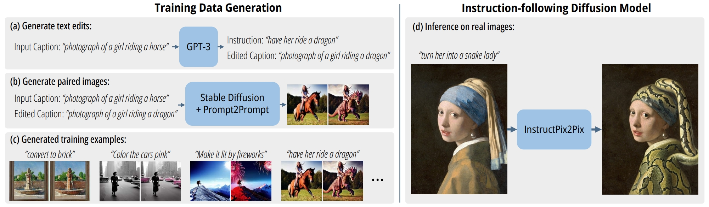

BibTeX
@inproceedings{bai20243dpe,
title = {Real-time 3D-aware Portrait Editing from a Single Image},
author = {Bai, Qingyan and Shi, Zifan and Xu, Yinghao and Ouyang, Hao and Wang, Qiuyu and Yang, Ceyuan and Wang, Xuan and Wetzstein, Gordon and Shen, Yujun and Chen, Qifeng},
booktitle = {European Conference on Computer Vision},
year = {2024}
}
Related Work

Live 3D Portrait: Real-Time Radiance Fields for Single-Image Portrait View Synthesis.
Alex Trevithick, Matthew Chan, Michael Stengel, Eric R. Chan, Chao Liu, Zhiding Yu, Sameh Khamis, Manmohan Chandraker, Ravi Ramamoorthi, Koki Nagano.
TOG 2023.
Comment: Proposes a one-shot method to infer and render a 3D representation from a single unposed image in real-time.
Comment: Proposes a one-shot method to infer and render a 3D representation from a single unposed image in real-time.

InstructPix2Pix: Learning to Follow Image Editing Instructions.
Tim Brooks, Aleksander Holynski, Alexei A. Efros.
CVPR 2023.
Comment: Proposes an image editing method following human textual instructions.
Comment: Proposes an image editing method following human textual instructions.
Comment: Proposes a hybrid explicit-implicit network that synthesizes high-resolution multi-view-consistent images in real time and also produces high-quality 3D geometry.